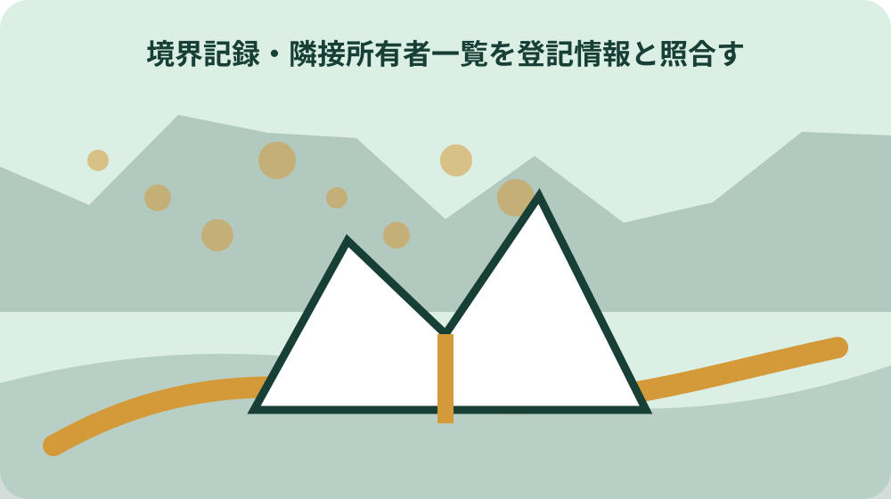
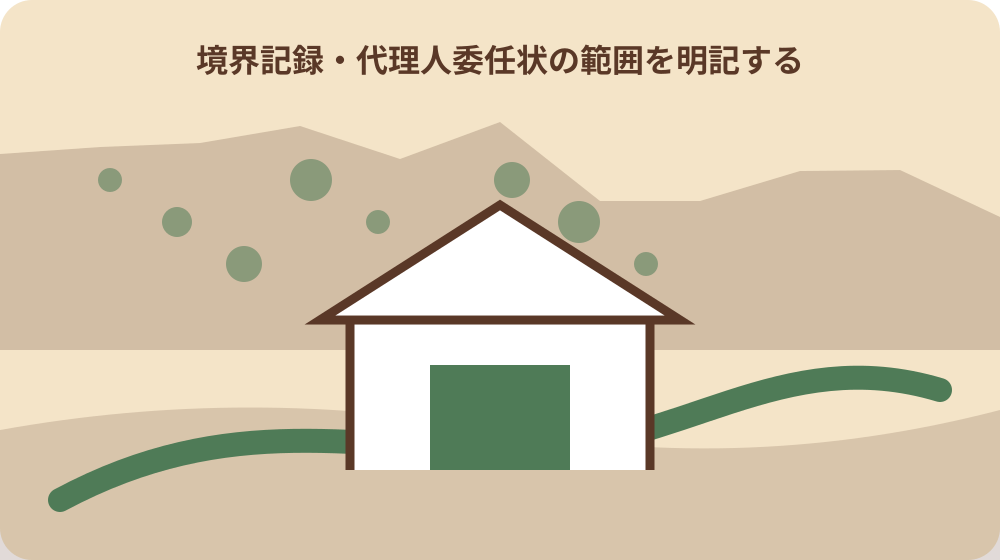

先に結論を確認する
この記事の答え：杭が移動している場合や、舗装止めが財産境界ではない場合があります。管理資料と現地測量を照合して判断します。
森町で最初に照合する条件：対象が町管理の道路・河川・水路・町有地かを先に建設課用地係へ確認し、国道や県管理地の手続と混同しない。
前面の公共用地を道路・河川・水路に分ける
森町公式ページが境界確定申請の対象として示すのは、町が管理する道路、河川、水路、その他の町有地と民有地との境界である。現地に舗装や側溝があるという外観だけで、町道・河川・水路の別を確定しない。
対象地の前面・側面にある公共用地を図面へ示し、道路、河川、水路、町有地の候補を分ける。複数種類に接する土地では、どの辺の境界を確定したいかを申請目的と一緒に建設課用地係へ伝える。
水路が暗渠化されている場合や、道路と水路が並ぶ場合は、公図上の「道」「水」と現況の位置が一致するとは限らない。現況写真、地番、周辺の公図をそろえて相談する。
同じ敷地の北側が町道、東側が水路という場合は、辺ごとに管理者と申請対象を記す。河川区域や県道に接する可能性があれば、森町の境界確定申請だけで全周が確定すると考えず、管理主体ごとの協議成果を別図面で確認する。対象辺には始点・終点の候補と接する地番を付け、家の塀や側溝の位置だけで範囲を表現しない。相談時に『全周』か『町有地との一辺』かを明示する。道路と水路の交点では、各管理線の接続方法も確認事項になる。片方の確定図を延長してもう片方の線を推定せず、両手続の測点が一致するか代理人へ照合してもらう。
公図と登記から管理者を特定する
国土交通省の境界確定手順は、法務局の地図・公図と土地登記簿から、前面道路内の土地所有者を確認するよう示している。地方公共団体名義なら、その都道府県または市町村が申請先になる。
公図では申請地の地番だけでなく、前面に「道」「水」や無地番部分があるか、周辺地番との接し方を読む。登記情報で名義を確認し、国・県・森町のどこが管理するかを照合する。
取得した公図には取得日、管轄、対象地番、方位を付ける。古い写しや不動産資料の略図だけで申請先を決めず、分からない管理者は図面を示して所管窓口へ確認する。
公図上で無地番の細長い土地があっても、法定外公共物か、道路敷の一部か、別の公有地かは図だけで確定できない。登記簿、道路台帳、既存境界確定図など町が保有する資料の有無を尋ね、所有名義と実際の管理者が同じかも確認する。公図の作成年や精度によって現況とのずれが見える場合がある。図上距離だけで境界点を現地へ移さず、測量基準点と既存成果の照合へ進む。
森町建設課用地係へ対象を事前確認する
森町の公共用地境界確定申請の窓口は建設課用地係で、公式ページの電話番号は0538-85-6325である。申請対象が町管理地か不明な段階では、申請書の完成より先に対象地を確認する。
事前確認では申請地番、隣接する公共用地の種類、境界確定の目的、希望時期、手元にある公図や測量図を伝える。国道・県道など別管理者であれば、次に確認する機関を聞く。
電話だけで図面の位置関係を説明しにくい場合は、窓口へ持参する資料と相談方法を確認する。回答日、担当部署、次に必要な資料を記録し、個人名だけを申請先として残さない。
相談時には『町有地か』『境界確定申請の対象か』『過去の確定図があるか』『代理人や測量が必要か』を別の質問にする。用途廃止や払い下げも希望するなら、その目的を最初に伝え、境界確定後に続く別手続と費用の範囲を確認する。用地係の公式ページには申請様式があるが、個別案件の所要期間や必要測量までは一律に示されていない。希望日から逆算できると断定せず、現在の処理順を確認する。

様式第1号に申請地と目的を記録する
森町は境界確定申請の様式第1号を公開している。申請地は登記・公図で確認した表記を使い、売買、分筆、建築など境界確定を必要とする目的が後の立会資料と一致するようにする。
申請書へ添える資料は、森町が公開する「境界立会について」の案内で現行要件を確認する。国管理道路の添付資料例を、そのまま森町の必須書類と決めつけない。
提出用の写しには提出日、添付図書名、図面版を記す。補正や差し替えがあった場合は旧版を削除せず、どの変更が受理版へ反映されたかを追えるようにする。
申請目的が分筆なら分筆予定線、建築なら計画敷地、売買なら取引対象筆との関係を代理人へ示す。ただし目的に都合のよい境界線を申請書へ先に描くのではなく、希望する確認範囲と、資料・協議で確定する線を分ける。様式第1号の住所・地番表記は隣接所有者一覧、委任状、現地立会者一覧、境界確定図へ引き継がれる。最初の誤記が全書類へ広がらないよう登記事項と読み合わせる。
隣接所有者一覧を登記情報と照合する
森町は様式第2号として隣接所有者一覧表を公開している。現地で隣に住む人を推測して記載するのではなく、対象地周辺の登記情報を基に、境界協議へ関係する所有者を整理する。
一覧表では隣接地番、所有者、確認に用いた登記情報の日付を対応させる。共有地、相続登記中、住所変更が疑われる土地は、古い名義のまま連絡できると判断しない。
所有者の氏名・住所を含む資料は公開用の現地写真や家族共有メモと分けて保管する。立会調整で連絡先を得た場合も、登記上の所有者と連絡担当者を別欄にする。
隣接地が共有なら共有者の範囲、法人名義なら代表窓口、相続未登記なら現在の権利関係を確認する必要がある。誰の同意・立会が必要かは記事から推測せず、登記情報と町・代理人の指示を照合し、未確認者を一覧上で明示する。連絡が取れない所有者を一覧から削除すると協議範囲が見えなくなる。連絡方法、回答待ち、町へ相談した日を状態欄へ残し、確定工程への影響を確認する。
代理人委任状の範囲を明記する
森町は様式第3号の委任状を公開している。土地家屋調査士などへ依頼する場合、申請書提出、測量、立会調整、確定図作成のどの範囲を委任するかを申請者と代理人で確認する。
委任状の申請地、申請者、代理人の表記を様式第1号と一致させる。複数筆や複数所有者が関係する場合は、一通の委任状がどこまでを対象にするか曖昧にしない。
委任状の写し、代理人へ渡した資料、代理人から受け取った成果物を同じ案件番号で管理する。口頭依頼だけの追加作業が生じたら、境界確定図の責任範囲と費用を再確認する。
代理人が作成した測量図と、町が最終的に確認する境界確定図は同じ役割とは限らない。成果物一覧へ作成者、作成日、町への提出有無、確定済みかを記し、見積書に含まれる立会回数や再測量条件も事前に照合する。委任後も申請者は確定対象辺と目的を確認し続ける。代理人から町へ質問が出た場合、回答内容と図面修正の関係を共有してもらい、完成図だけを突然受け取らない。
既存図面と現地測量の対応表を作る
国管理道路の一般手順では、既境界確定図や道路台帳座標などの資料と現地測量を比較する合せ図を作成する。これは森町の必須様式を示すものではないが、既存資料と現況を別々に検証する必要性を示している。
対応表には既存図面名、作成年、基準点、測点、現地で確認できた標識、測量日を並べる。古い確定図の線を現在の航空写真へ重ねただけで、現地境界が再確認できたとは扱わない。
森町の手続で必要な測量図・比較資料は用地係と代理人へ確認する。国の手順にある提出部数や作図方法を森町にも適用すると断定せず、参考にした範囲を明記する。
対応表で差が出た点は、杭の移動、図面精度、測量基準、過去工事など原因候補を列挙するだけにとどめる。原因を確定したように書かず、どの追加測量・資料・立会確認で差を解消したかを最終図面と結び付ける。国の手順で挙げる土地区画整理図、地籍調査成果図などの資料が森町の対象地にもあるとは限らない。利用可能な既存資料名は用地係へ確認し、入手できない資料を前提にしない。
現地立会者一覧に出欠と立場を残す
森町は様式第10号の現地立会者一覧表を公開している。立会者は申請者、代理人、隣接所有者、公共用地の管理側など立場が異なるため、氏名だけの出席簿にしない。
立会記録には日時、対象地、使用図面、参加者の立場、当日確認した点、保留になった点を記載する。欠席者がいる場合は、後の確認方法を決め、出席者だけで全関係者が合意したと扱わない。
現地で提案された境界線と、協議後に確定図へ描かれた線を区別する。立会時の手書き図へ「確定」と追記せず、正式な成果物を受け取るまで途中資料として保存する。
立会当日の写真には撮影位置と方向を付け、人物の顔や隣家の生活情報を公開しない。確認した測点は図面上の番号で記録し、『電柱の横』『塀の端』のように移設・改修で失われる目印だけを残さない。当日に結論が出なかった測点は保留番号を付け、必要資料と次回調整者を記す。出席者一覧と議事メモを対応させ、誰の発言か不明なメモで合意を補わない。
杭・プレート・舗装止めを同一視しない
国土交通省のQ&Aは、道路の境界杭などが工事で移動している場合があると説明している。また、一般に境界ブロックと呼ばれる舗装止めや縁石は、必ずしも財産境界ではない。
現地写真ではコンクリート杭、金属プレート、鋲、縁石、側溝を別の種類として記録する。形状だけで境界標と断定せず、刻印、位置、既存図面の測点との対応を測量担当者へ確認する。
道路工事や民有地側の建築工事の履歴が分かる場合は、境界標が動く可能性を検討する。現況写真を証拠の全てとせず、管理資料・測量・立会の結果を組み合わせる。
舗装端や側溝外側が連続して見えても、財産境界が同じ線を通るとは限らない。複数の標識が一直線に並ばない場合も、都合のよい二点だけを結ばず、既存座標と全測点を使った測量結果を確認する。境界標らしい物を発見した日と測量で同定した日を分ける。写真台帳には『候補』『図面対応確認済み』『確定図記載』の状態を付け、発見時点で確定扱いしない。

協議結果を境界確定図へ反映する
境界確定は許可・承認のように一方が決めるものではなく、関係者双方の協議で確定する。国の一般手順も、現地立会後に合意した境界線で境界確定図を作成し、審査後に確定書を発行する流れを示す。
森町は境界確定図の様式を公開している。立会時の提案、修正指示、最終図面の測点と線が一致するかを確認し、確定前の案を正式図面と同じファイル名で保存しない。
確定図を受け取ったら対象地番、公共用地、縮尺、方位、測点、確認主体、日付を点検する。不明な略号や欠落があれば、売買や工事へ使う前に用地係または代理人へ確認する。
協議に時間がかかる場合、申請から何日で必ず確定すると予定表へ固定しない。国のQ&Aも測量作業や隣接所有者の立会に要する期間で一概に言えないとしているため、次の調整事項と回答待ち相手を工程表へ残す。売買契約や建築確認の日程へ境界確定を組み込むなら、未確定時の保留条件を関係者で決める。予定優先で途中案を確定線として使わない。
里道・水路の用途廃止は別ファイルに分ける
道路法や河川法などが適用されない里道・水路は法定外公共物と呼ばれ、公図に地番のない「道」「水」と記載されることがある。公共機能がなくなった場合の用途廃止は、境界確定とは別の手続である。
森町の用途廃止は建設課への事前相談から始まり、事前調査で可能と判断された後に本申請へ進む。用途廃止後の普通財産の払い下げは総務課への相談が続くため、境界が決まっただけで取得できるとは限らない。
境界確定、測量、売買契約、登記など用途廃止から払い下げに伴う一連の費用は申請者負担と案内されている。境界申請の案件ファイルとは別に、用途廃止の判断、費用、次の担当を管理する。
用途廃止の対象になり得るかは、現に公共的機能がないことなど町の事前調査で判断される。長年使っていないように見える、草が生えている、自己敷地内へ入り込んで見えるという事情だけで、用途廃止可能と説明しない。用途廃止後は普通財産となり、払い下げ相談が続く。用途廃止の承認と売買契約・所有権移転を同じ完了日にまとめず、各段階の通知と費用を確認する。
大石の視点：確定図と協議経路を家へ残す
公的事実として確認できるのは、森町管理の公共用地には境界確定申請が必要であり、申請書、隣接所有者一覧、委任状、立会者一覧、境界確定図の様式が公開されていることだ。行政資料は家庭内の保管順まで定めていない。
ここからは私見である。大石の視点では、確定図だけでなく、公図・登記の確認、申請書、立会者、協議中の修正、確定図の受領までを一案件へつなぐと、後の所有者が境界線の由来をたどれる。
私なら確定図を先頭に置き、後ろへ申請書、隣接所有者一覧、委任状、立会記録、測量資料、連絡履歴を並べる。これは公式様式ではなく保管上の提案であり、境界の法的判断は正式図面と関係者の確認へ戻る。
この並べ方を森町指定の保存方法とは表示しない。家族向け表紙には『町が発行・確認した資料』『代理人作成資料』『立会中のメモ』『大石の整理案』を区分し、将来の売買・分筆・建築で途中案が使われないようにする。私の整理案は境界を確定する効力を持たない。図面を第三者へ渡す際は、正式な確定図か、説明用写しか、未確定の検討図かを表紙とファイル名で明示する。確定後に境界標が失われたり現況が変わったりした場合も、保存写真だけで復元せず、確定図と測量の専門家による再確認へ戻る。原本の保管者と写しの配布先も表紙へ記し、売却後の引継ぎ時に資料が分散しないよう確認する。